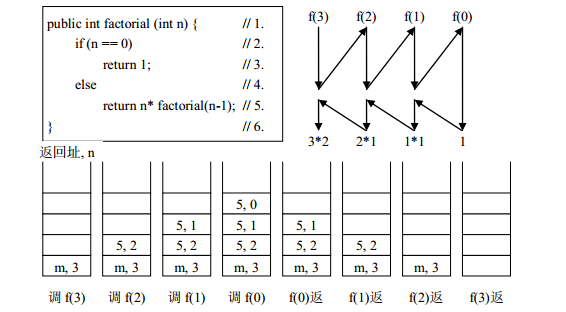
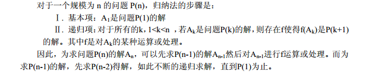
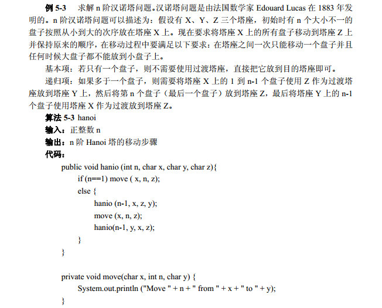

递归的概念
递归: 是指在定义自身的同时又出现对自身的引用.如果一个算法直接或间接地调用自己,则称这个算法是一个递归算法.
递归组成: 任何一个有意义的递归算法总是由两部分组成:递归调用与递归终止条件.
- 递归组成
- 递归调用
- 递归终止条件
递归的实例
求N的阶乘
public static void main(String[] args) {
// 求n的阶乘
int sum = factorial(4);
System.out.println(sum);
}
public static int factorial(int n) {
if (n==1) { // 递归终止条件
return 1;
}else{
return n * factorial(n - 1); //递归调用
}
}
从代码中可以看出,在编写递归算法时,一定要注意有递归调用和递归终止条件.如果没有递归终止条件,那么将无休止的进行下去,直到溢出.如果没有递归调用,
那么就不是一个递归算法.
递归的实现与堆栈
我们知道在递归算法中会递归调用自身,因此在递归算法的执行过程中会多次进行自我调用.那么这个调用过程是如何实现的呢?
为了说明自身的递归调用,我们先看任意两个函数之间进行调用的情形.
通常在一个函数执行过程中需要调用另一个函数时,在运行被调用函数之前系统通常需要完成如下工作:
- 1.对调用函数的运行现场进行保护,主要是参数与返回地址等信息的保存;
- 2.创建被调用函数的运行环境;
- 3.将程序控制转移到调用函数的入口.
在被调用函数执行结束之后,返回调用函数之前,系统同样需要完成3件工作:
- 1.保存被调函数的返回结果;
- 2.释放被调用函数的数据区;
- 3.依照保存的调用函数的返回地址将程序控制转移到调用函数.
注意:
1.如果上述函数调用的过程中发生了新的调用,也就是被调函数在执行完成之前又调用了其他函数, 此时构成了多个函数的嵌套调用.
2.当发生嵌套调用时按照后调用先返回的原则处理,如此则形成了一个保存函数运行时环境变量的后进先出的使用过程.
3.因此整个函数调用期间的相关信息的保存需要一个堆栈来实现.
4.系统在整个运行时需要的数据空间安排在一个堆栈中.
4.1每当调用一个函数时就为它在栈顶分配一个存储区;
4.2每当从一个函数返回时就释放它的存储区.
从底层过程理解递归调用
从上一节我们明白了函数之间是如何调用的了.那么一个递归算法的实现实际上就是多个相同函数的嵌套调用.
对上面N阶乘法的例子,具体说明,看图

从上图,我们知道了递归算法的实现原理.后调用的先返回,因此我们就是从递归的终止条件开始层层往上返回.再次说明了,递归算法必须得有终止条件.
但是: 我们也看到了递归算法在某些情况下并不一定是最高效的方法,主要原因在于递归方法过于频繁的函数调用和参数传递,这会使系统有较大的开销.在某些情况下,采用循环或递归算法的非递归实现,将会大大提高算法的实际执行效率.
基于归纳的递归
基于归纳的递归是一种较为简单并且也是一种基本的递归算法设计方法.它的主要思想是把数学归纳法应用于算法设计之中.
可以看看wiki上关于数学归纳法的解释,明白什么是数学归纳法,如何与递归结合起来.
WIKI-数学归纳法
数学归纳法-->递归
从数学归纳法的思路推导到递归的算法思想

比如这个经典的例子

在这个例子里面,我们主要是要理解数学归纳法的思想和递归的思想是如何联系在一起的